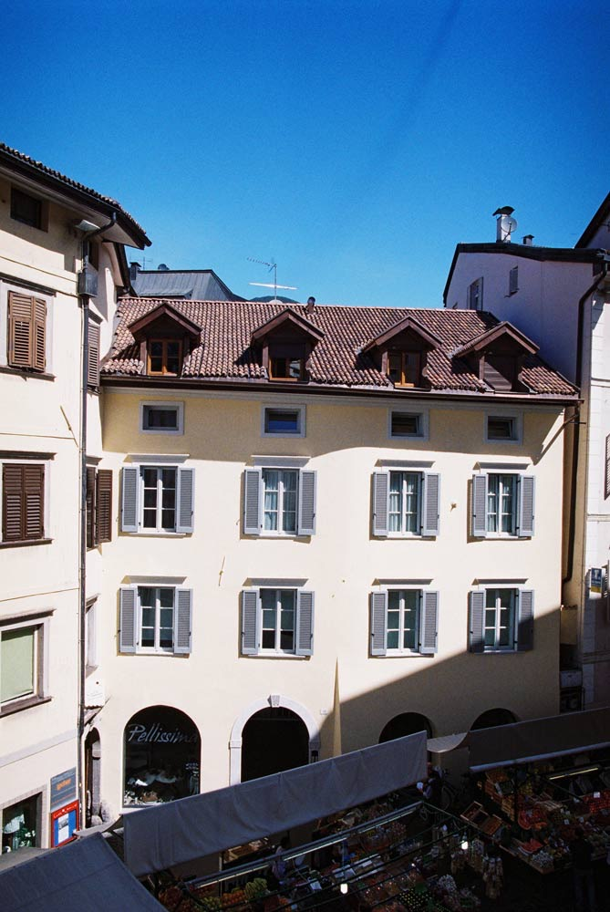
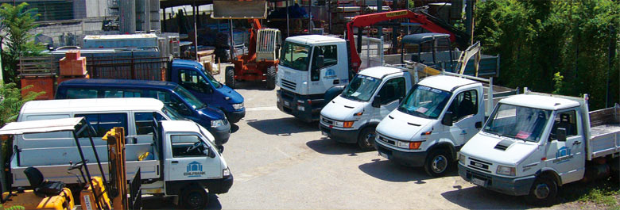
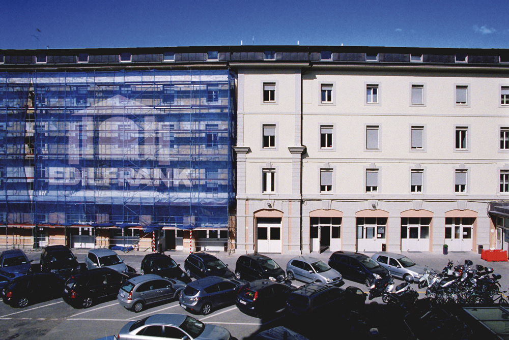
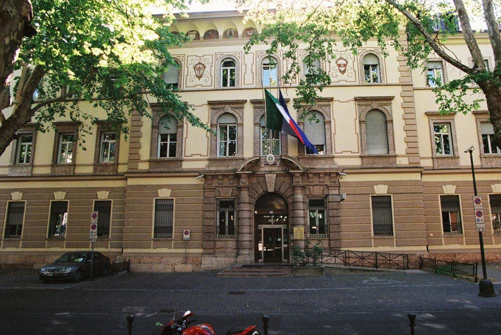
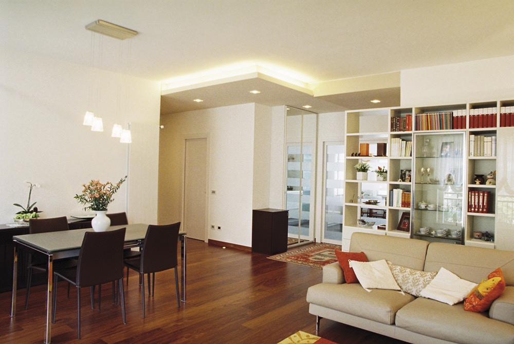
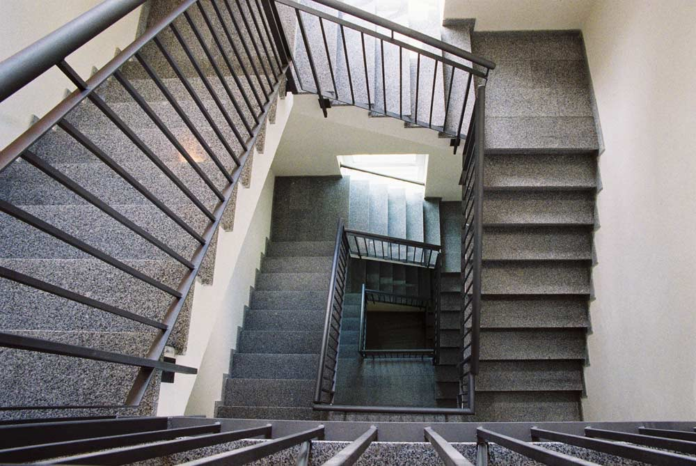
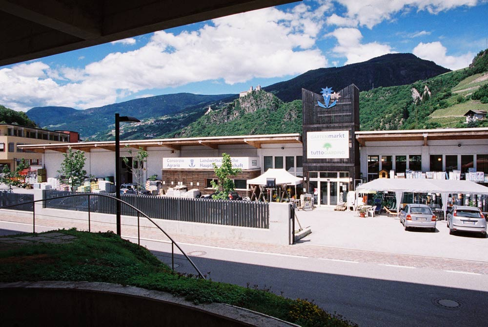
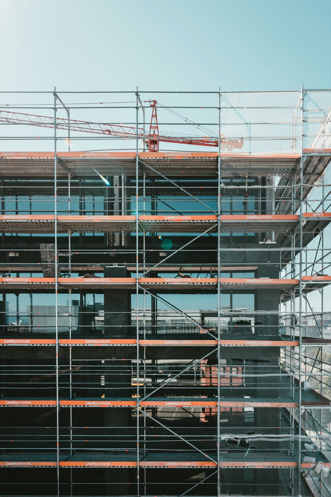
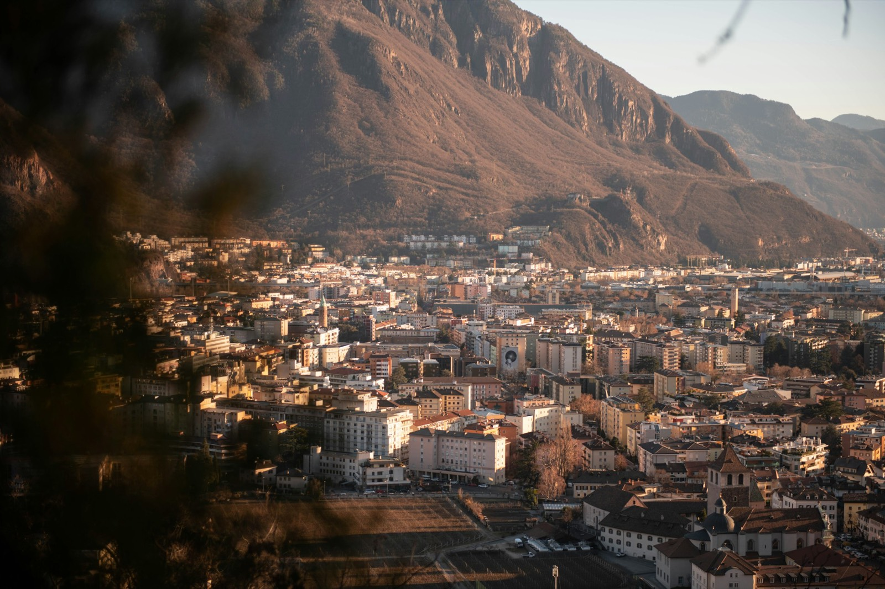

Privato · Tutela artistica
Piazza Erbe, Bolzano
Risanamento di un edificio sotto tutela artistica.
Impresa di costruzioni · Bolzano · dal 1986
Case, condomini, facciate e edifici pubblici. Anche edifici sotto tutela artistica, nel centro storico.
01 · Lavorazioni
Attrezzature tecniche nostre e personale formato: per una ristrutturazione, un restauro o un edificio nuovo.

La preparazione del cantiere, con mezzi nostri.
Cementi armati, murature portanti, tramezzature e costruzioni a secco in cartongesso.
Su edifici di ogni epoca, anche sotto tutela artistica.
Termici, acustici e antincendio. Cappotti e coibentazioni con ponteggi e impalcati di proprietà.
Tetti di ogni forma e materiale, rifacimenti compresi.
Elettrici, idro-termosanitari e di refrigerazione.
Ceramica, legno, pietre naturali e resine.
02 · Referenze

Privato · Tutela artistica
Risanamento di un edificio sotto tutela artistica.

Pubblico
Risanamento delle facciate.

Pubblico
Risanamento della facciata.

Privato
Ristrutturazione totale di un appartamento.

Pubblico
Risanamento totale, giroscale in granito.

Industriale
Costruzione della nuova filiale.
Privato
Costruzione di un nuovo condominio residenziale.
E in città anche: Viale Druso 76 e Via Vicenza 20, coperture e facciate con balconi; Via Peter Mayr, completamento e rifiniture di un condominio.
Pubblico e industriale
Per il Consorzio Agrario Provinciale di Bolzano: manutenzione e adeguamento delle filiali, nuove sedi a Chiusa e Malles Venosta.
E il risanamento della piscina del Commissariato del Governo.
Foto dei cantieri Edilfrank.

03 · Chiavi in mano
Gestiamo noi le fasi del lavoro e le imprese coinvolte. Voi parlate con una persona sola.
Vediamo l’edificio e capiamo cosa serve.
Ogni lavorazione descritta, con i prezzi dell’elenco per le opere edili della Provincia Autonoma di Bolzano come riferimento.
Con la nostra squadra, i nostri mezzi e i nostri ponteggi.
Chiavi in mano, con un unico referente fino alla fine.
04 · Qualifiche
Le attestazioni che permettono a Edilfrank di lavorare per enti, caserme ed edifici demaniali.

05 · Chi siamo
Edilfrank lavora da allora in tutte le province del Trentino Alto Adige, nell’edilizia pubblica, privata e industriale. Ristrutturazioni, restauri e nuove costruzioni, con personale formato e aggiornato su sicurezza, ambiente e conservazione.
06 · Contatti
Un appartamento da rifare, una facciata, un tetto o un edificio nuovo: scriveteci due righe o chiamate l’ufficio.